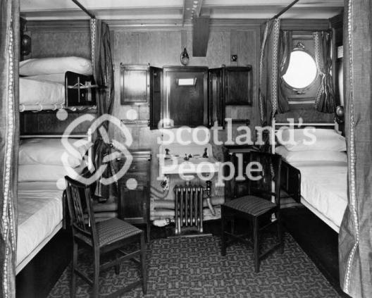

Laurence Brown and Janet Crombie traveled in cabin class aboard Canadian Pacific’s Duchess of Bedford, embarking at Greenock on 7 September 1929. This finding is established by their entries on the British outward passenger sheet headed Cabin. Laurence’s Detroit entry card records landing at Quebec on 13 September and U.S. admission at Detroit on 15 September. The manifest names Quebec and Montreal together, while a later card names Montreal. Those different entries are retained below. [P1, P2, P3, P4, P5]
The file brings together the passenger records, three actual 1928 interior photographs, contemporary ship evidence, financial calculations and a record of the remaining questions. Passenger-specific facts, descriptions of the vessel and comparisons from other dates have separate source labels. The four principal 1929 image pages and their existing Cold Case File transcriptions are reproduced in the exhibits.
Findings established by the passenger records
| Question | Finding | Evidence |
|---|---|---|
| Travel class | Cabin for both Janet and Laurence; the outward sheet’s class heading applies to their rows. | [P1] |
| Embarkation | Greenock, Scotland, 7 September 1929. | [P1, P2] |
| Contracted landing port | Montreal, through ditto marks in the outward list. | [P1] |
| Laurence’s recorded landing | QUEBEC, P.Q.; 9/13/29 on the contemporaneous Detroit card. | [P4] |
| Manifest arrival heading | QUEBEC & MONTREAL; 13 September 1929. | [P3] |
| Entry into the United States | Laurence: Detroit, 15 September 1929; later petition specifies C.P.R.R. | [P4, P6] |
| Money and fare payer | Laurence’s card: $50; Self. Manifest: both meet the $50 threshold and both report self-paid passage. | [P3, P4] |
| Assigned cabin and actual fare | Neither is identified in the inspected passenger documents. | [P1, P2, P3, P4] |
Names are preserved by document. The outward list uses Laurence Brown; the U.S. manifest and Detroit card use Lawrence Brown. The 1943 petition uses Laurence Brown Douglas and explicitly identifies Lawrence Brown as the name used for his 1929 entry. Janet is recorded as Janet Crombie. Elizabeth Anderson’s relationship is reproduced as the records describe it: Mother. That field identifies a declared contact and does not resolve biological parentage. [P1, P2, P3, P4, P6]
Evidence notation: a quoted entry is the record’s wording; a ditto mark is described before its inherited value is explained; [?] means uncertain reading. A blank, dash, clipped edge and unreadable entry have different meanings and remain distinguishable. The supplied scans carry later highlighting or outlining. These marks are preserved as part of the supplied copy and are not treated as marks made in 1929.
Chronology and the two Canadian port names
| Date | Documented event | Limits |
|---|---|---|
| 13 April 1929 | Janet’s manifest lists 469891, Washington, 13-4-29 in the printed immigration-document columns. | The underlying document has not been inspected; its precise type is not inferred from the number. |
| 3 September 1929 | Laurence’s document 27768, Glasgow, 3.9.29; the corrected date appears above a struck-through entry. | The earlier date is not confidently readable in this copy. |
| 7 September 1929 | Both appear on the Greenock outward Cabin sheet and on List D for Duchess of Bedford. | Janet is row 8 and Laurence row 9 on the outward list; List D uses rows 3 and 10. |
| 13 September 1929 | List D’s arrival heading names Quebec & Montreal. Laurence’s later-issued Detroit card gives Quebec as his seaport of landing on this date. | The shared voyage heading is not an individualized disembarkation statement for Janet. |
| 15 September 1929 | Laurence’s Detroit card records his U.S. entry, intended permanent stay and work-seeking purpose. | A separate Detroit card for Janet is not among the documents inspected. |
| 21 June 1941 | Laurence’s Blaine card refers back to MONTREAL: Sept, 1929: D/Bedford. | A retrospective entry, approximately twelve years after the crossing. |
| 11 February 1943 | Naturalization petition records Detroit entry on Sept. 15, 1929, on the C.P.R.R., under Lawrence Brown. | It also gives Ayr as his last foreign residence and Glasgow as his emigration origin; these differ in specificity from the 1929 forms. |
Sources for this chronology are the original entries or their supplied image copies. [P1, P2, P3, P4, P5, P6] The outward list describes where passengers contracted to land, which is a booking destination. The Detroit card asks for seaport of landing, which is a different field. The manifest’s combined Quebec & Montreal heading describes the arrival list rather than conclusively assigning each passenger to one port.
Current finding for Laurence: Quebec is the landing port recorded on his 1929 Detroit card. Montreal remains documented as the contracted landing destination and as the port remembered or recorded on his 1941 card. The evidence does not justify silently replacing these entries with one harmonized version. Janet’s exact disembarkation port remains unresolved beyond the Montreal contract destination and the combined arrival heading. [P1, P3, P4, P5]
The dates span six calendar days between Greenock departure and the recorded Canadian landing, followed by two calendar days to Laurence’s Detroit entry. Departure and arrival times are not supplied, so this is not an exact sailing duration. No particular Greenock pier, tender, Canadian berth, hotel, train departure time or intermediate rail itinerary is assigned. The 1943 C.P.R.R. entry supports rail travel into the United States; CP #21 on the 1929 card is retained in its printed Previous disposition field pending identification in a period timetable or administrative record. [P1, P2, P4, P6]
Passenger comparison and all identified numbers
| Field | Laurence or Lawrence Brown | Janet Crombie | Source |
|---|---|---|---|
| Outward row | 9 | 8 | [P1] |
| U.S. List D row | 10 on both halves | 3 on both halves | [P2, P3] |
| Name on outward list | BROWN, Laurence | CROMBIE, Janet | [P1] |
| Name on U.S. list | BROWN, Lawrence | CROMBIE, Janet | [P2] |
| Age | 22 | 29 | [P1, P2] |
| Sex and marital status | M; single | F; married | [P2] |
| Occupation | Grocer | H’wife | [P1, P2] |
| UK address | 39 Greive St., Dunfermline | 39 Greive St., Dunfermline | [P1] |
| Class | Cabin | Cabin | [P1] |
| Visible contract ticket ending | …082; initial digits clipped | …480; initial digits clipped | [P1] |
| Contracted landing | Ditto of Montreal | Ditto of Montreal | [P1] |
| Outward last residence | Scotland column marked; USA pencilled beside it | Foreign Countries column marked | [P1] |
| Intended future residence | U.S.A. by ditto | U.S.A. by ditto | [P1] |
| Able to read and write | Yes; English; Yes, by ditto | Yes; English; Yes, by ditto | [P2] |
| Nationality and race entries | British; Scots | British; Scots, by ditto | [P2] |
| Birthplace | Scotland; Edinburgh | Scotland; Edinburgh, with inherited country entry | [P2] |
| Immigration document number | 27768 | 469891 | [P2] |
| Issued at and date | Glasgow; 3.9.29 corrected above deletion | Washington; 13-4-29 | [P2] |
| Last permanent residence | Scotland; Dunfermline | U.S.A.; Chicago | [P2] |
| Nearest relative in origin country | Mother: Mrs. Elizabeth Anderson, 39 Grieve St., Dunfermline | Mother: Mrs. Elizabeth Anderson, 39 Grieve St., Dunfermline | [P3] |
| Final destination | Ill.; Chicago | Ills.; Chicago | [P3] |
| Ticket to final destination | Ditto of Yes | Ditto of Yes | [P3] |
| Passage paid by | Self | Ditto of Self | [P3] |
| Money question | Ditto of Yes under the $50 threshold question | Ditto of Yes under the $50 threshold question | [P3] |
| Earlier U.S. residence | No | 1926–1929; Chicago, faint copy | [P3] |
| Person or home being joined | B.-in-Law: Mr. Thomas Crombie, 1534 So. Kostner Ave., Chicago, Ill. | Home: 1534 South Kostner Ave., Chicago, Ills. | [P3] |
| Height | 6 ft; dash for inches | 5 ft 0 in, faint copy | [P3] |
| Complexion; hair; eyes | Fr.; Fr.; Blue | Fr.; Br.; Gr., provisional faint readings | [P3] |
| Identifying marks | None | No distinct mark confidently readable in supplied copy | [P3] |
This comparison expands inherited ditto entries for readability. The exhibits retain the original transcription conventions. Spelling is not normalized inside quotations: Greive on the outward list, Grieve on the arrival forms, and Dunferline in the existing Detroit transcription are preserved. Earlier suggestions of complete ticket numbers 32480 and 33082 are not adopted as verified digits from the clipped image. Rows 8, 9, 3 and 10 are list positions, not cabin or berth numbers. [P1, P2, P3, P4]
Additional details on Laurence’s Detroit card
| Field or mark | Recorded entry or condition |
|---|---|
| Form and issuing office | Overseas MANIFEST; Port of DETROIT, MICH.; U.S. Department of Labor, Immigration Service; Form 548. |
| Date and serial | SEP 15 1929 stamp; upper-right serial stamp is too faint for a complete reading. |
| Accompanied by | Dash. The card does not name Janet in this box; that does not erase her presence on the same ship lists. |
| Age and months | 22 Yrs.; dash for months. |
| Nationality and race | Scots; Scots, separately entered. |
| Literacy and language | Read Y; writing entry not separately legible; English. |
| Money shown | $50. |
| Passage and prior U.S. stay | Self; No. From, To and Where fields blank. |
| Destination contact | Bro/law; Thomas handwritten into the joining-person entry; Crombie; 1534 So. Kostner Ave., Chicago, Ill. |
| Purpose and duration | Seek Work; Perm, handwritten. |
| Head-tax entry | Handwritten code; characters are ambiguous. Existing transcription C88 63543[?] is retained only as a doubtful reading. |
| Visa and statutory annotation | C.I.V. No. 27768; Glasgow; handwritten Sec 5, 9/3/29. |
| Landing and vessel | QUEBEC, P.Q.; 9/13/29; DUCHESS OF BEDFORD. |
| Physical description | 6 ft.; dash for inches; Fr. complexion; Fr. hair; Blue eyes. |
| Origin-country contact | Mother – Eliz. Anderson; 39 Grieve St., Dunfermline [existing transcription reads Dunferline], Scot. |
| Administrative boxes | Records by, Previously examined at and its Date are blank. CP #21 is in Previous disposition; adm in Present disposition, P.I. |
| Other visible features | Two punched holes near the top; yellow highlighting on selected typed fields; handwritten corrections and annotations; printed bottom code 14—2140 in existing transcription. |
All entries above come from the supplied Detroit image. Small type, overwriting and the head-tax code require a better scan before a final literal transcription. The full supplied image is preserved in Exhibit D; no uncertain digit has been silently substituted. [P4]
Corrections and markings on the other pages
The outward sheet identifies the ship by official number 160482 and names Canadian Pacific. Its header shows registered tonnage 11801[?] and additional figures 16610 and 505, plus a provisioning certificate with 900 statute adults and 21 days. These are reproduced as form entries, not used as the ship’s gross tonnage, actual passenger count or actual voyage duration. The master’s field was transcribed on the site as R. GIBSON[?]; visual comparison favors SIBBONS with an uncertain initial. A contemporary 1928 feature names Captain H. S. Sibbons, but that does not certify every letter on the 1929 sheet. [P1, S14]
The blue pencil mark across the outward header, its bottom totals and references, the clipped ticket column, ditto marks and the yellow band are retained. That yellow band includes another passenger, Ernest Brooks; highlighting is not evidence that he belonged to the same traveling party. On List D, the struck-through entry immediately above Laurence belongs to Peter Ross on line 9. Laurence’s own visa-date correction is on line 10. The NOT USED stamps on the lower left-half rows and the marginal figures on the right half remain visible in the exhibit images. [P1, P2, P3]
The Duchess of Bedford in 1928 and 1929
The vessel was a new Canadian Pacific Atlantic liner built by John Brown and Company at Clydebank, yard 518. National Records of Scotland dates her launch to 24 January 1928. Her sister ships were Duchess of Atholl, Duchess of Richmond and Duchess of York. Wellington City Archives records the maiden Liverpool–Quebec–Montreal sailing as 1 June 1928, making her approximately fifteen months into service when Laurence and Janet sailed. [S1, S10]
| Particular | Evidence-supported description |
|---|---|
| Ship’s name and operator | Duchess of Bedford; Canadian Pacific. Official number 160482 on the outward list. [P1] |
| Type | Turbine steamship with two propellers. [S9, S10] |
| Size | About 600 feet overall. Crowe’s engineering table uses 600 feet and rounded 20,120 gross tons; the archive catalogue gives 20,123 GRT. [S9, S10] |
| Original accommodation capacity | 580 cabin, 480 tourist and 510 third class; total 1,570 passenger places. Capacity is not the number carried on this voyage. [S10] |
| Service output and speed | 18,000 shaft horsepower; 17.5 knots in the builder’s engineering account. These are service particulars, not a measured average for September 1929. [S9] |
| Turbines | Three turbines drive each shaft through reduction gearing: six turbines for two propellers. [S9] |
| Boilers | Six main Yarrow water-tube boilers and two auxiliary cylindrical boilers; main steam 350 psi at 686°F. [S9] |
| Electrical supply | Two turbo-generators totaling 1,000 kW and two diesel generators totaling 900 kW in the engineering table. [S9] |
The machinery source is a 1948 paper by T. A. Crowe, John Brown’s engineering director, explicitly describing the original 1928 installation. It is used for that installation rather than for a later passenger refit. Gross register tonnage measures enclosed volume, not the vessel’s weight. The smaller registered-tonnage figure on the outward form is kept separate from the gross figure. [S9, P1]
Later history helps identify misleading illustrations: the ship served during the Second World War, was rebuilt and renamed Empress of France after the war, and was withdrawn in 1960. Postwar accommodation capacities, altered funnels or later room arrangements do not describe the ship Laurence and Janet boarded. The 1928 photographs below avoid that date confusion. [S1, S10]
Three photographs of the actual ship
Cabin dining saloon on A Deck
![1928, looking aft. The image shows tablecloths, individual dining chairs, laid place settings, a high central ceiling and an upper balustrade. This is the cabin dining saloon aboard Duchess of Bedford. It does not identify the travelers’ table or what they ate. © Crown copyright, National Records of Scotland, UCS1/116/31/16, IMGAAA00564. Public archive preview, watermark retained. [S2]](img/Duchess_of_Bedford_1928_Dining_Saloon.jpg)
Drawing and observation room on the Promenade Deck
![1928, looking toward the port side. Upholstered chairs and settees, tables, lamps, carpet, decorative panels and windows document a furnished public sitting room. The photograph establishes the facility, not either passenger’s personal use of it. © Crown copyright, National Records of Scotland, UCS1/116/31/3, IMGAAA00561. Public archive preview, watermark retained. [S3]](img/Duchess_of_Bedford_1928_Observation_Room.jpg)
Three berth Cabin 103 on A Deck

Cabin class comfort and life aboard
Cabin was the highest of the ship’s three listed accommodation categories. The original photographs show a formal dining saloon and furnished public rooms, while Canadian Pacific’s November 1928 advertisement promoted ventilation, beds, separate sports decks and a full deck of public rooms. The evidence supports describing this as comfortable, well-appointed travel aboard a recently built liner. It does not establish a private suite, a private bathroom or an exceptional level of personal wealth. [P1, S2, S3, S8, S10]
| Space | Location established by the 1928 archive | What is established |
|---|---|---|
| Cabin dining saloon | A Deck | Room and table setting photographed. [S2] |
| Drawing and observation room | Promenade Deck | Furnished public sitting room photographed. [S3] |
| Cabin smoking room | Promenade Deck | Archive photograph identifies the fireplace and room. [S7] |
| Gymnasium | Boat Deck | Archive catalogue identifies a 1928 photograph. [S5] |
| Cabin nursery | Boat Deck | Archive catalogue identifies a 1928 photograph looking forward. [S6] |
| Example Cabin 103 | A Deck | Three-berth layout photographed; passenger allocation unknown. [S4] |
Meals and music
The dining photograph provides direct evidence of a dedicated cabin dining room with table service settings. A contemporary feature, Cabin Liners Set New Standard in The Chesterville Record of 5 July 1928, reports an orchestra playing in the Cabin Dining Room. It describes transmission of the music to other passenger areas by microphones and amplifiers. This establishes shipboard musical provision before the family’s voyage; it does not record the program on any September 1929 evening. [S2, S14]
No menu from the 7–13 September 1929 crossing, dining-room seating list, meal-time schedule or individual account has been recovered in the inspected material. Consequently, no breakfast, lunch, dinner, afternoon tea, wine, dish or table companion is assigned to Laurence or Janet. A menu for another ship, another class or another year would be comparison evidence only. The Bodleian catalogue identifies a Duchess of Bedford farewell dinner menu dated 15 May 1930, Sayers 35 CP20, but its contents have not been inspected. [R2]
Services described in the same ship’s 1931 booklet
This is a dated comparison: the cabin passenger booklet for 4 September 1931 describes steward wake calls, a dinner bugle thirty minutes beforehand, a purser’s safe, paid accommodation upgrades, deck games, board games, library books and shoe cleaning. It also lists infant cots, a stenographer, a surgeon and nurses, life belts, postal and wireless services, currency exchange and onward travel assistance. Deck chairs, rugs and cushions were separately rented at $1.50 each. Some services therefore carried additional charges. These rules and charges are not certified as the September 1929 terms, and the booklet does not show which services Laurence or Janet used. [S11]
The surviving digital material used here includes the 1931 booklet’s cover, route chart and the archive’s transcribed passenger information. It is not a complete page-by-page facsimile of that booklet. Its issue date and route must remain attached whenever its images are displayed. [S11]
Cash fares and 2026 purchasing power
The two money statements must be kept distinct. List D asks whether a passenger possessed $50 and, if less, how much. Janet’s and Laurence’s ditto marks inherit Yes, establishing that each met that threshold. Laurence’s Detroit card separately records Money shown $50. Janet’s exact cash total cannot be obtained by turning her Yes into an exact $50. [P3, P4]
| Person and record | 1929 evidence | October 2026 comparison |
|---|---|---|
| Laurence, Detroit card | Exactly $50 entered in Money shown. | About US$975 consumer purchasing power. |
| Laurence, List D | Yes by ditto to the $50 threshold question. | Threshold corresponds to about US$975; the Detroit card supplies the exact recorded figure. |
| Janet, List D | Yes by ditto to the $50 threshold question. | At least about US$975 at that threshold; precise amount unknown. |
| Fare actually paid by either passenger | Not entered in the inspected records. | No exact conversion is possible without an actual fare. |
Calculation: US$50 × (337.511 ÷ 17.300) = US$975.47. The denominator is September 1929 CPI-U, U.S. city average, all items, not seasonally adjusted. The numerator is October 2026 CPI-U, published on 10 November 2026, the latest released month available for this report. The rounded comparison is about $975 in October 2026 purchasing power. It is not a full-year 2026 average and it is not a wage or wealth comparison. [M1, M2, M3]
The dollar field is on a U.S. immigration form. It is treated as a U.S.-dollar amount for the calculation; the form does not inventory the physical notes or coins shown. A Canadian landing port alone does not convert a U.S. immigration money question into Canadian currency. The September 1929 monthly exchange table gives C$1 as US$0.9924, but that exchange is not applied to the $50 U.S. entry. [P3, P4, M4]
What can be said about cabin class fares
No September 1929 Duchess of Bedford cabin tariff, receipt, agent’s invoice or ticket face has been recovered. The records establish the travel class and declared payer, not the fare. The 1928 advertisement’s $200 and $300 figures concern West Indies cruises from New York lasting sixteen or twenty-nine days. They are not prices for this Atlantic crossing. [P1, P3, P4, S8]
A contemporary comparison gives scale without supplying their fare: Marcia Clarke Davenport’s March 1929 New Yorker article reports winter cabin-liner crossings at US$150–$175 generally. Canadian Pacific’s September westbound sailing is not specifically priced. At March 1929 CPI 17.0, those amounts equal roughly US$2,978–$3,474 in October 2026 purchasing power. This is an industry benchmark, not a fare range established for either traveler. [S13, M1, M2]
If a sterling fare is later obtained, convert the original fare using a historical exchange rate before calculating its U.S. purchasing-power equivalent. The official September 1929 monthly rate was US$4.8482 per £1. Thus a verified September sterling amount would be multiplied by 4.8482 and then by 337.511/17.3. That is about US$94.59 in October 2026 purchasing power per 1929 pound; it is not a modern pound-to-dollar exchange quotation. [M1, M2, M4]
Who paid and what the records do not prove
Both travelers’ manifest entries report self-paid passage; Laurence’s Detroit card repeats Self. This is evidence of their declared payment arrangements. It does not document the original source of every pound or dollar they possessed, a bank balance, savings history, a gift, a loan or a third party’s involvement. Janet’s occupation H’wife and Laurence’s Grocer are reported occupations, not income figures. Their class of travel alone cannot identify a financier. [P1, P2, P3, P4]
The cash shown at inspection is separate from the fare already paid. Adding $50 to an unverified fare would create a speculative total travel budget. A complete cost reconstruction would require the actual ocean tickets, any rail coupons, booking date, currency, cabin grade, return-ticket terms, taxes, baggage charges and onboard expenses. None of those unknown sums is inserted into the account.
Luggage and the onward journey
No personal baggage inventory, number of trunks or suitcases, weight, contents, baggage tags, insurance certificate or excess-baggage charge appears in the inspected passenger entries. A ticket number, manifest line, head-tax notation or CP #21 should not be repurposed as a luggage count. A blank or absent luggage field does not mean the travelers carried no belongings. [P1, P2, P3, P4]
For dated procedural context, the same ship’s October 1932 passenger booklet describes storing trunks not required in staterooms, grouping baggage alphabetically for customs, obtaining labels from the baggage master, and arranging onward delivery for a transfer charge. It discusses limited carrier liability, optional insurance and through baggage forwarded in bond. These are later company procedures, not the family’s baggage inventory or a verified 1929 allowance. [S12]
List D indicates tickets to Chicago by inherited Yes entries. Laurence named his brother-in-law Thomas Crombie at 1534 South Kostner Avenue; Janet listed Home at that address. Laurence’s Detroit card and later petition support the U.S. entry date and rail connection. They do not establish that Janet crossed at the same moment, that they occupied adjacent railway seats, or which stops they made between Canada and Chicago. A separate Janet border card and a matching railway timetable are the next documents needed for those details. [P3, P4, P6]
Open questions and the documents that could answer them
| Unresolved detail | Best next evidence | Current boundary |
|---|---|---|
| Complete contract ticket numbers | Uncropped British outward page or the original tickets and booking ledger. | Retain only the visible endings …480 and …082. |
| Cabin, deck and berth assignments | Purser’s accommodation list, berth plan annotated for this sailing, ticket face or booking ledger. | Cabin class is established; Cabin 103 is an archive photograph only. |
| Exact fares and funding trail | Passenger receipts, agent invoices, account ledgers, bank or family records. | Both declare Self; no unsupported fare or sponsor is assigned. |
| Janet’s exact cash | A separate immigration card or other individualized declaration. | List D establishes the $50 threshold, not an exact total. |
| Janet’s landing and U.S. crossing | Canadian landing record and U.S. border-entry card tied to her identity and date. | Combined Quebec & Montreal heading; Montreal contract destination. |
| Their baggage | Customs declarations, baggage checks, shipping receipts, personal correspondence. | No count, weight or contents established. |
| September 1929 meals and routine | Dated voyage menus, daily programs, seating lists and passenger guide. | 1928 dining facilities established; 1931 services explicitly comparative. |
| Rail route and CP #21 | September 1929 Canadian Pacific timetable and immigration notation context. | Rail connection corroborated; exact meaning and itinerary still open. |
| Faint and overwritten entries | Higher-resolution clean scans, full margins and any reverses or adjacent sheets. | No new digits or deleted wording supplied by guesswork. |
Identified archival targets include the University of Waterloo’s 1929 Duchess of Bedford passenger guide, SCA217-GA197-6; the Bodleian’s April 1929 Duchess-class deck plan, Sayers 33 CP1; and Library and Archives Canada’s 1928 booklet The Duchesses of the Atlantic, ID 5760973, R231-4160-9-E, RG30 volume 12534. These catalogue entries identify real materials for acquisition; they do not mean the original contents have already been inspected. [R1, R2, R3]
A deck plan can establish where a room was located, but cannot assign that room to a passenger without an accommodation record. The Waterloo guide is catalogued for the Saint John route, so even a correct-year guide must be separated from proof of this September Quebec–Montreal sailing. [R1, R2]
Exhibit handling and transcription status
The following four exhibits reproduce the complete image files supplied by the Cold Case File, without removing their margins, handwriting, cross-outs or later highlights. The accompanying text is the existing site transcription, retained as a working transcript so that every previously recorded detail remains available. Review notes identify disagreements and limitations rather than silently rewriting the transcript. The original archive scans remain the preferred basis for a final reading.
The 1941 Blaine card and 1943 petition are supporting records available through their source links. Their retrospective entries have been extracted above, with the 1929 documents given priority for statements made at the time. No private paternity hypothesis is needed to establish the voyage facts. [P5, P6]
Exhibit A British outward passenger list
![Cold Case File site display copy. Existing added yellow highlighting and red marks, where present, are preserved. Full supplied image shown. [P1]](img/laurence-brown-1929-outward-passenger-list.jpg)
Existing Cold Case File transcription. The following working transcript reproduces the complete supplied transcription from this document's Cold Case File page, including its misspellings, uncertainty markers and descriptions of markings. It has not been newly certified against a clean archival scan. The display copy's resolution and existing annotations limit some readings. [P1]
[Printed, top right] P.M. 20. [Printed] MERCHANT SHIPPING ACT, 1906, and ALIENS RESTRICTIONS ACTS, 1914 & 1919. [Printed] OUT-GOING PASSENGERS. [Printed] Returns of Passengers leaving the United Kingdom in ships bound for places out of Europe, and not within the Mediterranean Sea. [Printed note, small type, not legible at this resolution] [A large blue pencil scribble across the top of the form] Ship's Name: DUCHESS OF BEDFORD. Official Number: 160482. Steamship Line: CANADIAN PACIFIC. Master's Name: R. GIBSON[?]. Registered Tonnage: 11801[?]. [Handwritten figures] 16610. 505. Where Bound: QUEBEC & MONTREAL. [Printed] I hereby Certify that the Provisions actually laden on board this Ship are sufficient, according to the requirements of the Merchant Shipping Acts, for 900 [handwritten] Statute Adults for a voyage of 21 days. Date of Departure: SEPTEMBER 7th 1929. (Signature) [signature, illegible] Master. Date: SEPTEMBER 7th 1929. [Printed] NAMES AND DESCRIPTIONS OF BRITISH PASSENGERS EMBARKED AT THE PORT OF GREENOCK[?]. [Columns] (1) Contract Ticket No. | (2) Names of Passengers | (3) Last Address in the United Kingdom | (4) Class (Cabin) | (5) Port at which Passengers have contracted to land | (6) Profession, Occupation or Calling of Passengers | (7) Ages of Passengers: Adults of 12 years and upwards (accompanied by husband or wife / not accompanied), Children between 1 and 12, Infants: Males, Females | (8) Country of last Permanent Residence: England, Wales, Scotland, Northern Ireland, Irish Free State, Other parts of the British Empire, Foreign Countries | (9) Country of Intended Future Permanent Residence [Ticket numbers on the left edge are partly cut off.] ...017 | THORNTHWAITE Howard G. 1 | Central Stn. Hotel Glasgow. | 1 | Montreal | Engineer | M 27 | 1 | Australia. ...091 | FERGUSON Chris. 1 | 9 Grange Loan, Edinburgh. | 2 | " | H'wife | F 35 | 1 | Canada ...061 | PRYDE Helen 1 | Clunie House, Strathmiglo. | 3 | " | H'wife | F 25 | 1 | " " Morris 1 | -do- | 4 | " | School | child 5 | 1 | " ...1546 | MENZIES Mrs. William 1 | 20 Norfolk Cres. London. | 5 | " | H'wife | F 40 | 1 | " ...129 | FALCONER Elsie L. 1 | 31 Shore St. Macduff. Scot. | 6 | " | Saleswoman | F 20 | 1 [written beside: USA] | U.S.A. 27934 | BROOKS Ernest W. 1 | 21 Grosvenor Pl. Aberdeen | 7 | " | Accountant | M 27 | 1 [written beside: USA] | " ...480 | CROMBIE Janet 1 | 39 Greive St. Dunfermline. | 8 | " | H'wife | F 29 | [1 in the Foreign Countries column] | " ...082 | BROWN Laurence 1 | 39 Greive St. Dunfermline. | 9 | " | Grocer | M 22 | 1 [written beside: USA] | " ...040 | BROWN Francis 1 | Bents Hotel Montrose. | 10 | " | Retired Master Printer | M 59 | 1 | Australia. ...215 | BONE Peter Turner 1 | Mologa, Hepburn Gds, St. Andrews. | 11 | " | Engineer | M 70 | 1 | Canada ...516 | NEILL Helen 1 | 17 Warriston Cres. Edinburgh. | 12 | " | H'keeper | F 51 | 1 | Scotland. ...228 | DOWNIE Archibald 1 | Winning Brae, N. Newport Fife. | 13 | " | Banker | M 74 | 1 | " " Catherine 1 | -do- | 14 | " | H'wife | F 67 | 1 | " ...237 | RATTRAY Margt.C. 1 | 49 Glamis Rd. Dundee. | 15 | " | Stenographer | F 33 | 1 [written beside, illegible] | Honolulu. ...292 | RUSSELL Margt.G. 1 | 125 Trinity Rd. Edinburgh. | 16 | " | H'wife | F 45 | 1 | Canada " Betty 1 | -do- | 17 | " | Student | F 15 | 1 | " " Robt.G. 1 | -do- | 18 | " | Student | M 16 | 1 | " ...329 | McNAB Margt.J. 1 | 19 Elgin Terr. Dowanhill, Gla. | 19 | " | Architect | F 24 | 1 | " ...331 | MARTIN Duncan G. 1 | 51 Kinghorn Dr. King's Park, Gla. | 20 | " | Commercial Traveller. | M 36 | 1 | Scotland. ...340 | STEPHEN John Mel. 1 | Benton Cottage, Bridge of Don. | 21 | " | Merchant | M 62 | 1 | Canada ...331 | ANDERSON William 1 | Benton (Aberdeen) Cottage -do- | 22 | " | Clerk | M 65 | 1 | " ...353 | RUSSELL Barbara A.F. 1 | 3 Hermitage Pl. Leith. | 23 | " | Clerkess | F 47 | 1 | " ...703 | THOMSON Rev.Canon 1 | St.Mary's Rectory Peterhead. Aberdeens. | 24 | " | Priest | M 75 | 1 | Scotland. ...149 | ROBERTSON Isabella 1 | 21 Athole Gardens, Glasgow W.2. | 25 | " | Tourist | F 52 | 1 | Canada " Agnes L. 1 | -do- | 26 | " | " | F 50 | 1 | " ...988 | REID Mayne 1 | Mr.J.McNeid[?], Lonning[?] Alloa. Scot. | 27 | " | Barrister | M 46 | 1 | " " Jane 1 | -do- | 28 | " | H'wife | F 47 | 1 | " 98408 | DUNLOP Lillian 1 | 8 Waterloo Place, London. | 29 | " | Tourist | F 47 | 1 | " " Margt. 1 | -do- | 30 | " | " | F 45 | 1 | " [Bottom] C/FORWARD 1-30 [handwritten] 30. [circled] 30. [Column totals, handwritten] 2 2 11 14 1 – – – – 11 16 1. [Handwritten] B727/1229/3/1[?] [Printed, bottom] † By permanent residence is to be understood residence for a year or more. [Printed, below the page] Images reproduced by courtesy of The National Archives, London, England. www.nationalarchives.gov.uk [Note: ages in column (7) are entered under Male or Female; children's ages under the children's columns. Ticket numbers and some small entries are hard to read on this copy; uncertain readings are marked [?].]
Discrepancy note. The existing transcription renders the master's name as R. GIBSON[?]. Independent visual review suggests the surname SIBBONS, probably H. SIBBONS; the supplied working transcription is retained without alteration. The contract ticket column meets the clipped left edge of this display image. Complete ticket numbers therefore need confirmation from a full width source scan; no missing digits have been supplied here.
Exhibit B United States passenger manifest first half
![Cold Case File site display copy. Existing added yellow highlighting and red marks, where present, are preserved. Full supplied image shown. [P2]](img/lawrence-brown-1929-passenger-manifest.jpg)
Existing Cold Case File transcription. The following working transcript reproduces the complete supplied transcription from this document's Cold Case File page, including its misspellings, uncertainty markers and descriptions of markings. It has not been newly certified against a clean archival scan. The display copy's resolution and existing annotations limit some readings. [P2]
[Printed, top left] Form 630A. U.S. DEPARTMENT OF LABOR. IMMIGRATION SERVICE. [Handwritten] List D [Printed] LIST OR MANIFEST OF ALIEN PASSENGERS FOR THE UNITED [STATES — cut off] [Printed, small type] ALL ALIENS arriving at a port of continental United States from a foreign port or a port of the insular possessions of the United States, and all aliens arriving at a port of said insular possessions from a foreign port, a port of continental United States, or another insular possession, ... This (yellow) sheet is for the listing of [cut off] S.S. DUCHESS OF BEDFORD. Passengers sailing from GREENOCK, SEPTEMBER 7th, 1929. [Columns] 1 No. on List | 2 Head-Tax Status | 3 Name in Full: Family name, Given name | 4 Age: Yrs., Mos. | 5 Sex | 6 Married or single | 7 Calling or occupation | 8 Able to: Read, Read what language, Write | 9 Nationality (Country of which citizen or subject) | 10 Race or people | 11 Place of birth: Country, City or town | 12 Immigration Visa Number | 13 Issued at | 14 Date | 15 Last permanent residence: Country, City or town 1 | BROOKS. | Ernest Walker | 27 | ✓ M | S | Accountnt | Yes English Yes | British | Scots | Scotland Peterhead | 23985 | Glasgow | 6-8-29. | Scotland Aberdeen. 2 | BROWN. | Francis Alex. | 59 | ✓ " | W | Retired | " " " | " | " | " Montrose | 63 | Dundee | 26-8-29. | Australia Melbourne 3 | CROMBIE. | Janet | 29 | ✓ F | M | H'wife | " " " | " | " | " Edinburgh | 469891 | Washington | 13-4-29. | U.S.A. Chicago. 4 | FALCONER. | Elsie Lyall | 21 | ✓ " | S | Saleswmn. | " " " | " | " | " MacDuff | 23706 | Glasgow | 11-7-29. | Scotland MacDuff. 5 | MARTIN. | Duncan Gillies | 36 | ✓ M | M | Com.Trav. | " " " | " | " | " Glasgow | 294 [above a struck-through number] | " | 1-10-28. | " Glasgow. 6 | NEILL. | Helen Stewart | 51 | ✓ F | S | Secy. | " " " | " | " | " Edinburgh | 476755 | Washington. | 26-4-29. | U.S.A. Boston. 7 | STEWART. | John Ross | 50 | 7 ✓ M | M | Fire Ins. | " " " | Canadian | English | Canada Mackenzie | 492047 | New York. | 25-5-29. | " West Hartford. 8 | " | Rella May | 48 | 6 ✓ F | " | H'wife | " " " | " | " | " Waterloo | " | " | " | " " 9 | " | Peter Ross | 15 | 1 ✓ M | S | Student | " " " | " | " | " Toronto | " | " | " | " " [This whole line is struck through, and "To Canada" is written above it] 10 | BROWN. | Lawrence | 22 | ✓ " | " | Grocer | " " " | British | Scots | Scotland Edinburgh | 27768 | Glasgow | 3.9.29 [written above another date that is struck through] | Scotland Dunfermline. 11 | THORNTHWAITE. | Howard George | 27 | 3 ✓ " | " | Engineer | " " " | " | English | England London | 175 | Glasgow | 6.8.29 | " Glasgow 12 | CHRISTIE | Christina | 64 | ✓ F | S | Masseuse | " " " | " | Scots | Scotland Aberdeen | 451372 | WASHINGTON | 5.2.29 | Colo. Denver 13 | RATTRAY | Margaret | 33 | ✓ F | S | Stenogr. | " " " | " | " | " Kirriemuir | 456423 | WASHINGTON | 1.3.29 | T.H. Honolulu 14–31 | [Each line stamped] NOT USED [Bottom of form, printed] Total Passengers ... U.S. citizens ... Aliens ... [blank] [Printed note at bottom] *Permanent residence within the meaning of this manifest shall be actual or intended residence of one year or more. †List of races will be found on the back of this sheet.
Review note. The handwritten replacement visa date for Lawrence is visible above a struck or overtyped earlier date. The underlying date remains unresolved. The heavy crossing out and adjacent handwritten note on row 9 belong to the passenger above Lawrence on row 10. This appendix preserves the existing transcription rather than supplying uncertain text from inference.
Exhibit C United States passenger manifest continuation
![Cold Case File site display copy. Existing added yellow highlighting and red marks, where present, are preserved. Full supplied image shown. [P3]](img/lawrence-brown-1929-arrival-manifest.jpg)
Existing Cold Case File transcription. The following working transcript reproduces the complete supplied transcription from this document's Cold Case File page, including its misspellings, uncertainty markers and descriptions of markings. It has not been newly certified against a clean archival scan. The display copy's resolution and existing annotations limit some readings. [P3]
[This is the second (right-hand) half of the same List D. Much of this copy is too faint to read; only what can be read is given here.] [Printed] ...STATES IMMIGRATION OFFICER AT PORT OF ARRIVAL [heading cut off at left] [Printed, small type, not legible at this resolution] [Handwritten, top right] List D. [Printed] The entries on this sheet must be typewritten or printed. Arriving at Port of QUEBEC & MONTREAL, SEPTEMBER 13 SEP 1929[?], 19__. [Columns, printed headings mostly too small to read. From left: 16 The name and complete address of nearest relative or friend in country whence alien came | 17 Final destination: State, City or town | 18 Whether having a ticket to such final destination | 19 By whom was passage paid? | 20 Whether in possession of $50, and if less, how much? | 21 Whether ever before in the United States; and if so, when and where? | 22 Whether going to join a relative or friend; and if so, what relative or friend, and his name and complete address | further columns for character questions, condition of health, height, complexion, color of hair and eyes, marks of identification] 1 | Mother:-Mrs.Jane Brooks, 21,Grosvenor Pl.,Aberdeen | Ills. [a city name struck through] | Yes | Self | Yes | No | Brother:-Mr.James M.Brooks, 2250,Sherman Ave.[struck through words] | No | Per. | Yes | No No No No No No Good No | 5 [height illegible] | Fr. Bl. Br. | None. 2 | Cousin:- Miss Wishart, St.Cyrus, New Montrose. | Austr. Melbourne | " | " | " | Yes 1913-1921 [rest illegible] | In route to S.S. Niagara at Vancouver, for Sydney. | [rest illegible] 3 | Mother:-Mrs.Elizabeth Anderson,39,Grieve St., Dunfermline. | Ills. Chicago | " | " | " | 1926-1929 Chicago | Home:-1534,South Kostner Ave., Chicago, Ills. | " | Per. | Yes | [rest ditto marks] | 5 0 | Fr. Br. Gr. 4 | Father:-Mr.Wm.A.Falconer, 31,Shore St., MacDuff. | Mich. Detroit | " | " | No | | Fiance:-Mr.Jas.C.Gault, 3036,Springle Ave.Detroit | [rest illegible] 5 | Wife:-Mrs.D.G.Martin,51, Kinghorn Dr.,Kings Park. | Scot. Glasgow | " | " | Yes | Vari-ous times | S.F.M.Sims, friend. 480 New York St.,Memphis,Tenn. | Yes | Less than 60 days. No | [rest illegible] 6 | Sister:-Nora M. Neill,17, Warriston Cres.,Edinburgh | Mass. Boston | " | " | " | 1913-1919 Boston | Pioneer Club,410,Stuart Street,Boston, Mass. | No | Per. | Un-cer. | ... Excel. | 5 [illegible] 7 | E.J.Sims,K.C., Kitchener, Ont. | Conn. West Hartford | " | " | " | Hart-ford. | Home:-31, Bainbridge Road, West Hartford, Conn. | " | " | Pos. | ... Good | 6 0 | Dk. Gr. | Scar forehead. 8 | " | " | " | " | " | " | " | [ditto marks] 9 | [struck through line] Mother [rest illegible] | Scar ri.ear. 10 | Mother:- Mrs.Elizabeth Anderson,39,Grieve St. Dunfermline. | Ill. Chicago. | " | Self | " | No | B.-in-Law:-Mr.Thomas Crombie,1534,So.Kostner Ave., Chicago, Ill. | " | " | Yes. | [ditto marks] | 6 – | Fr. Fr. Blue | None 11 | Mrs.A.Targett[?],56,Venner Rd.,Sydenham,London. | Aust.N.S.W. Sydney | " | " | Yes 4 dys.N.Y. | Home:-17,Raglan St.,Mosman,Sydney,N.S.W. | Un-cer. | Less than 60 days | A.1. | 6 – | Fr. [rest illegible] 12 | Sister - Mary Christie, Aboyne, Aberdeenshire. | Colo. Denver | " | " | Yes 36 Denver | Miss C.Whyte, friend. 201 S.Colfax Ave.,Denver,Colo. | No | Perm. | No | ... Good | 5 4 | Fr. Grey Brn. | Nil 13 | Mother - Mrs.Mary Rattray, 49 Glamis Rd.,Kirriemuir,Angus. | T.H. Honolulu | " | " | " Honolulu | Self[?] Lower Gean[?] St.,Honolulu. | " | Yes | [rest illegible] | 5 – | Brn. Hzl. 14–30 | [blank] [Handwritten in the right margin near lines 22–24] 332. 334. 335.[?] [Printed note at the bottom of the page, too small to read on this copy]
Discrepancy note. The money column asks whether the passenger possessed $50 and, if less, how much. Janet's and Lawrence's ditto marks repeat an affirmative answer to that threshold question. They do not by themselves establish an exact cash total. Janet's precise amount remains unresolved; Lawrence's separate Detroit card records $50. Illegible years, small questionnaire headings and other doubtful marks remain uncertain in this display copy.
Exhibit D Detroit border entry card
![Cold Case File site display copy. Existing added yellow highlighting and red marks, where present, are preserved. Full supplied image shown. [P4]](img/lawrence-brown-1929-detroit-border-card.jpg)
Existing Cold Case File transcription. The following working transcript reproduces the complete supplied transcription from this document's Cold Case File page, including its misspellings, uncertainty markers and descriptions of markings. It has not been newly certified against a clean archival scan. The display copy's resolution and existing annotations limit some readings. [P4]
[Printed] Overseas MANIFEST Port of DETROIT, MICH. Date [stamped] SEP 15 1929. Serial No. [stamped, faint] 10[?]... Family name: BROWN. Given name: Lawrence. Accompanied by: – Age: 22 Yrs. – Mos. Sex: M. M. S. W. D.: [S marked]. Occupation: Grocer. Place of birth: Scotland, Edinburgh Nationality: Scots. Race: Scots. Read: Y. Write: [blank]. Language or exemption: English. Money shown: $50 Last permanent residence: Country Scotland. Town Dunfermline. Destination: Town Chicago. State Ill. Passage paid by: Self. Ever in U.S.: No. From: [blank]. To: [blank]. Where: [blank] Going to join (relative or friend): Bro/law – Name: Thomas[handwritten over typing] Crombie, Complete address: 1534 So.Kostner Ave.,Chicago, Ill. Purpose in coming and time remaining in U.S.: Seek Work [handwritten]. Perm [handwritten]. Head tax status: C88 63543[?] [handwritten]. Height: 6 ft. – In. Complexion: Fr. Hair: Fr. Eyes: Blue Name and address of nearest relative or friend in country whence alien came: Name Mother – Eliz.Anderson. Address 39 Grieve St., Dunferline[sic], Scot. C.I.V. No.: 27768. Place of issue: Glasgow. Section and subdivision of Act of 1924 under which issued: [handwritten] Sec 5, 9/3/29 Seaport of landing: QUEBEC, P.Q. Date of landing: [handwritten] 9/13/29. Name of S.S.: DUCHESS OF BEDFORD Records by: [blank]. Previously examined at: [blank]. Date: [blank]. Previous disposition: [handwritten] CP #21. Present disposition, P.I.: [handwritten] adm [Printed, bottom] U. S. Department of Labor, Immigration Service. Form 548. 14—2140
Discrepancy note. The head tax code includes an uncertain prefix and the upper right serial number is incomplete or too faint to read in full. The existing transcription is preserved without completing those characters. The handwritten CP #21 appears in the printed Previous disposition box, and adm in Present disposition. These markings are recorded with their field placement; they are not cabin or ticket numbers.